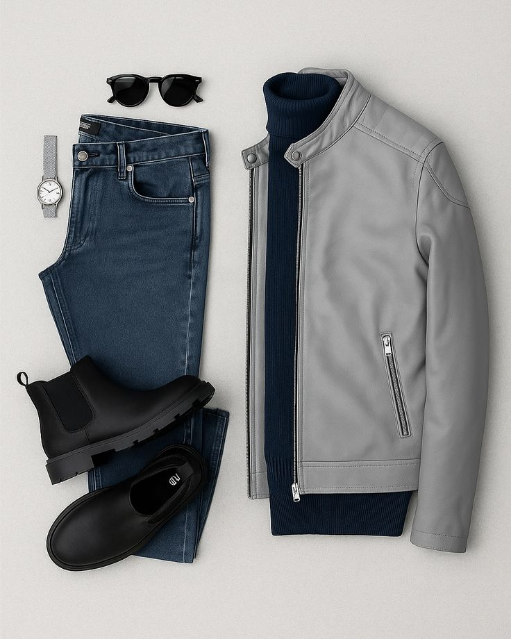
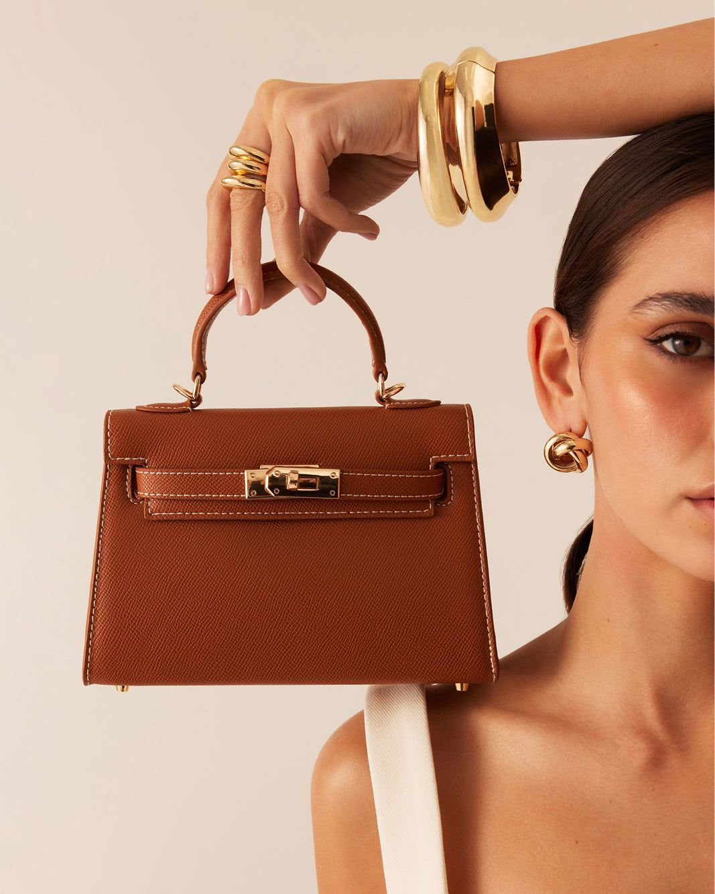
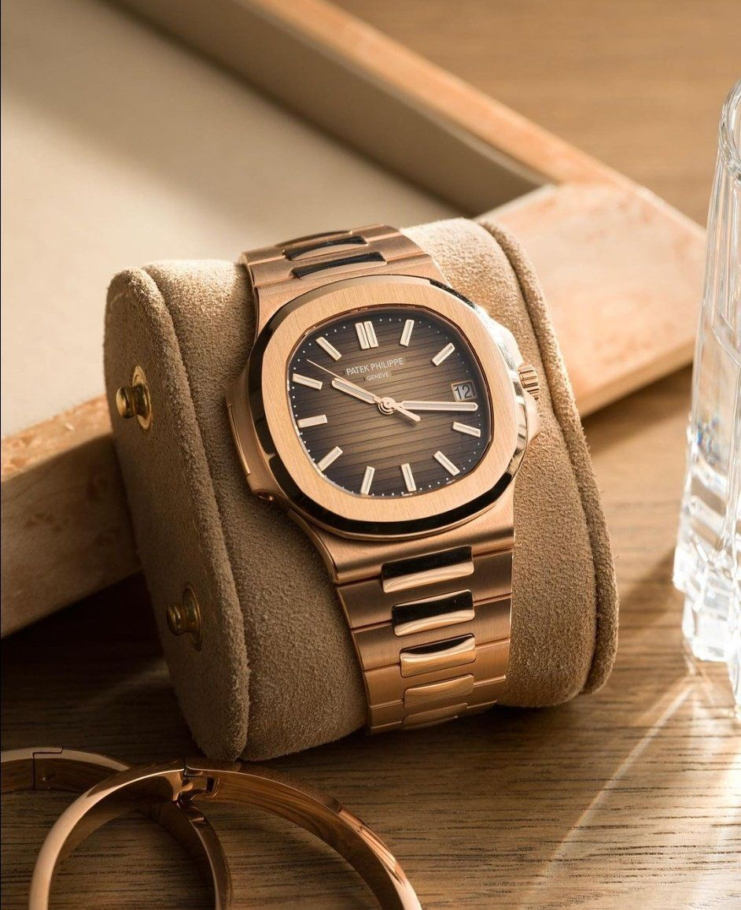
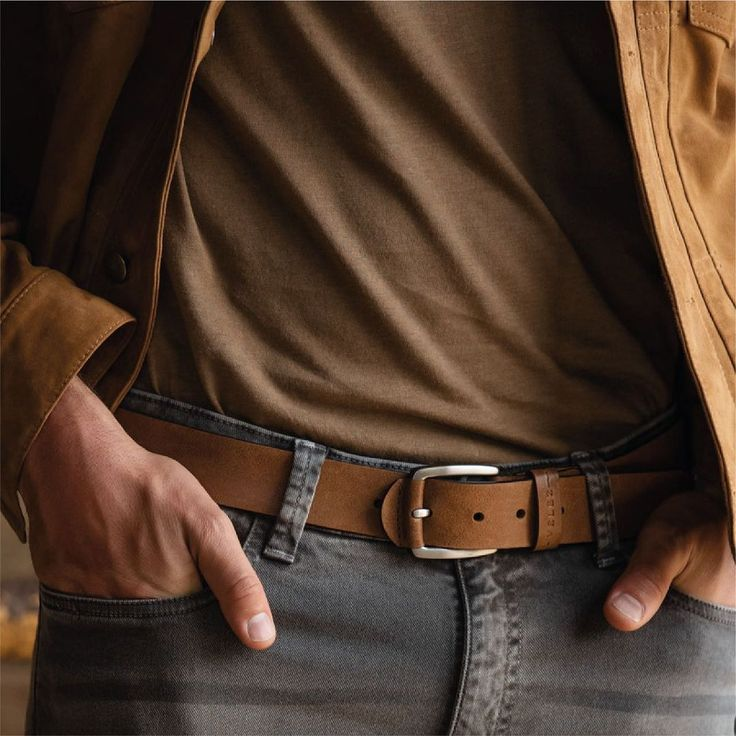
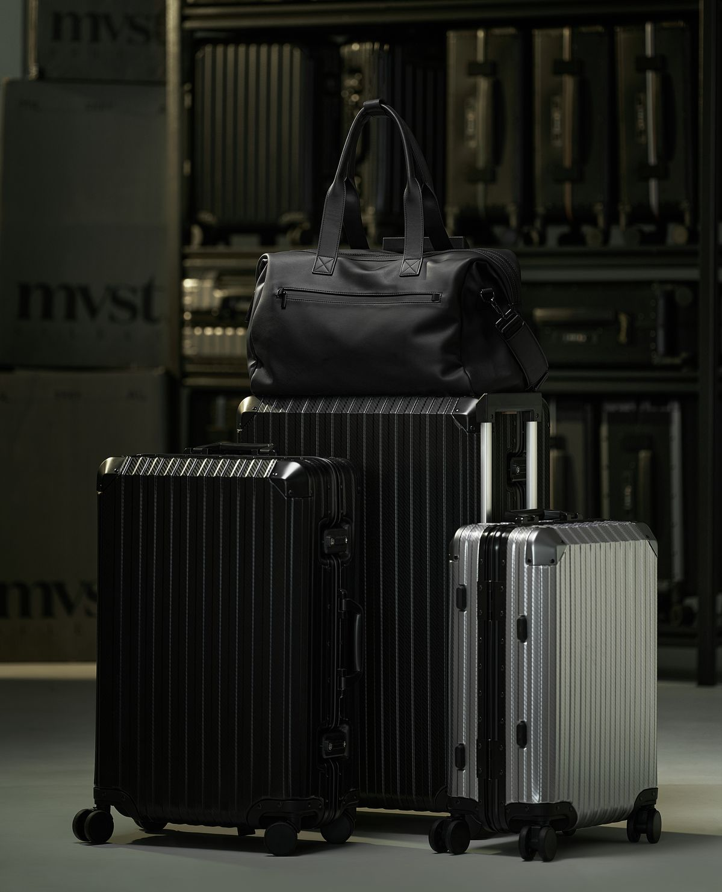

The Essential Wardrobe Upgrades for Modern Men
Discover key pieces to refine your style. From classic denim to luxury watches, elevate your everyday look with sophisticated basics. Read our expert tips on male fashion essentials.

Discover key pieces to refine your style. From classic denim to luxury watches, elevate your everyday look with sophisticated basics. Read our expert tips on male fashion essentials.

A deep dive into this season's hottest handbag trends. Find the perfect bag—from minimalist crossbodies to bold totes—to complement your unique style and statement pieces.
Selecting the best shoes for growing feet is crucial. We review the top durable and fashionable footwear options that keep your active children comfortable all day and night.

Explore the craftsmanship and investment value of high-end timepieces. Learn why a quality watch is the ultimate accessory for both men and women's sophisticated fashion collections.
Navigate the world of fragrance notes and families. Our comprehensive guide helps you discover the perfect signature perfume that reflects your personality and unique style essence.
From retro runners to chunky platforms, stay ahead of the curve. See the latest shoe styles that are dominating streetwear and casual footwear collections this year and next season.

A quality belt is essential for both function and fashion. Learn how to choose the right buckle and leather finish to complement your trousers and casual wear outfits seamlessly.

Whether you need a durable backpack or stylish travel tote, our guide covers the best bags for short trips and daily commutes. Functionality meets modern aesthetic design.
Maximize your wardrobe with effective layering techniques. From lightweight trench coats to stylish cardigans, learn how to build complex, visually interesting outfits today.
No articles in this category yet. Check back soon!